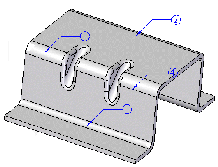

Bend Table command (Sheet Metal)
Bend Table command (Sheet Metal)
Displays the Bend Table dialog box, which you can use to set the bend sequence for the part. Balloons are displayed on the bends while the Bend Table dialog box is open.

When you select a balloon in the Bend Table dialog box or in the graphics window, a command bar is displayed that you can use to edit the balloon.
To learn more, see Working with sheet metal bend tables.
How do I
Place a bend table on a drawing sheetCreate a bend table for the part
Learn more
Bend tablesLook up more details
Bend Table command (Draft)Bend Table dialog box
Bend Table command bar (Draft)
Bend Table Properties dialog box
Bend Callouts page (Bend Table Properties dialog box)
Update Bend Table command